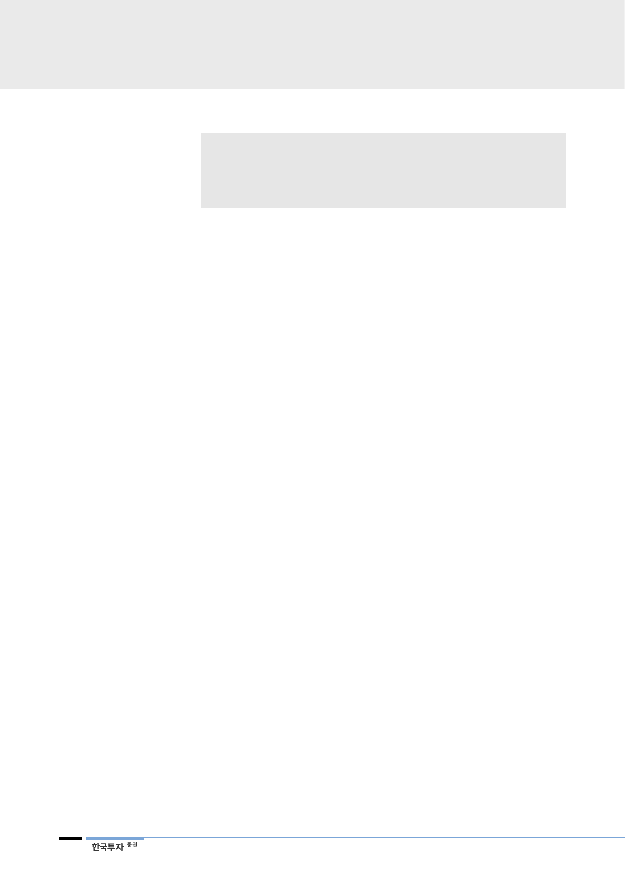

리포트 작성 목적
• 투자의견 ‘매수’ 상향
• 중국 시장 변화 점검, 동남아와 미주 사업 성장 잠재력 점검
• 국내 사업 면세점과 내수 사업 전망
I. 안팎으로 좋아진다
해외 사업을 보자!
대내외 악재는 대부분 반영,
하반기부터 실적 턴어라운드
1분기 영업이익 1,940억원
(-18% YoY)으로 추정,
컨센서스 소폭 하회 예상
투자의견 ‘매수’ 상향, 목표주가 26만원 제시
아모레퍼시픽 투자의견을 기존 ‘중립’에서 ‘매수’로 상향하고 목표주가 26만원을
제시한다. 목표주가 26만원은 정상화가 예상되는 2020년 EPS에 글로벌사 평균
대비 10% 할증을 적용한 PER 36배를 적용해 산출했다. 중국 고가 화장품 시장
성장과 럭셔리 브랜드 포트폴리오 강화에 힘입어 중국 사업의 점진적인 성장성
회복이 예상된다. 또한 동남아, 미주 사업 확대 등 해외 사업 성장에 주목한다. 해
외 사업 채널과 마케팅 투자는 국내 중소 브랜드 및 중국 로컬 화장품 업체들과
의 차별화 포인트이다. 이에 국내 사업은 브랜드 리뉴얼 및 채널 재정비가 일단락
되면서 중국인 인바운드 관광객 호조가 예상되는 하반기부터 내수 매출 및 이익
회복이 예상된다.
중국 사업은 사드 이후 영업 환경 악화뿐 아니라 경쟁 심화 속에 매스 브랜드의
부진과 럭셔리 포트폴리오를 확보하는 과정에서 성장률 둔화가 불가피했다. 유럽,
미주 지역 또한 구조 조정으로 인해 부진했다. 이에 내수 사업은 경쟁 심화와 사
드 이후 관광객 급감으로 인해 국내 오프라인 채널이 고전했다. 영업이익은
2016년을 피크로 2018년까지 급감, 주가 또한 고점 대비 50% 이상 하락해 관
련된 영향은 실적과 주가에 대부분 반영됐다는 판단이다. 우리는 상반기 부진을
일단락으로 하반기부터 해외 사업 기여 확대와 국내 사업 점진적인 회복에 힘입
어 실적 개선을 예상한다. 2019년, 2020년 영업이익은 전년대비 14%, 21% 증
가할 전망이다. 1분기까지 감익 후 2분기부터 전년 수준, 하반기에는 전년 일회성
비용의 베이스 효과까지 가세해 큰 폭의 실적 개선이 예상된다.
1분기 영업이익은 전년대비 18% 감소한 1,940억원에 그칠 전망이다. 국내 화장
품 매출액 증가율이 4%에 그칠 것으로, 면세 매출액이 전년대비 12% 증가할 전
망이나 순수 내수는 아직 역성장이다. 해외 매출액은 8% 증가할 전망이다. 유럽,
미주가 각각 20%대, 40%대 증가가 예상되나 중국 매출액이 8% 증가에 불과할
것이다. 또한 내수 부진과 아리따움 매장 리뉴얼, 중국 마케팅 비용 확대로 인해
감익이 불가피해 보인다. 한편 컨센서스와의 괴리는 축소되고 있는 것으로 보인
다. 2017, 2018년 매분기 컨센서스와 큰 차이가 나는 실적을 기록했으나 이번에
는 컨센서스 영업이익 대비 약 8% 하회에 그칠 것이다.
2